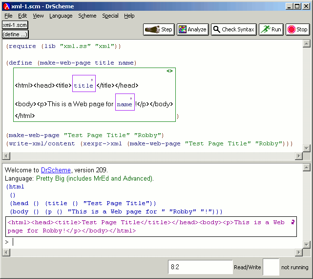
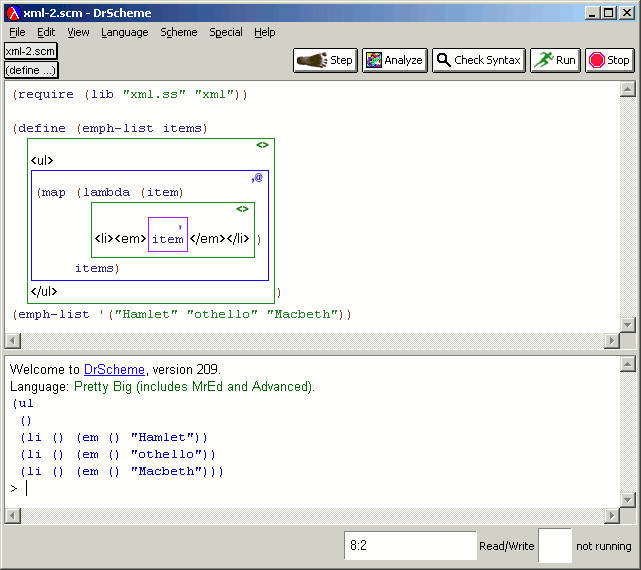

DrScheme provides support for generating XML output (which, as a special case, can be used to generate HTML). This consists of three entries in the Show menu:
The output is in the x-expression format.
The first example shows a simple Web page template: the function consumes a title and name and generates a Web page for the named person. The first invocation shows the x-expression output, while the second shows how a user can convert this into actual XML syntax:
|  |
The second example shows the use of Scheme Splice Boxes. The combination of higher-order functions, lists and splicing results in an extremely powerful document generation tool.
|  |